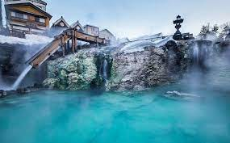

Countries I Want to Visit
Japan
- Trying a traditional onsen 
- Cherry Blossom Festival
- Tokyo
- Kyoto
If you haven't been to a natural hot spring, or onsen as they are known in Japan, I highly recommend visiting one! My first and only experience in a hot spring was when I studied abroad in Costa Rica, and they are a game changer. Hot springs combine the relaxation of soaking in hot water with the health benefits of mineral water and the beauty of nature, so they are an amazing getaway. According to the BBC, there are over 3,000 onsen in Japan so they are an interesting and unique part of Japanese culture.

Japan's Cherry Blossom Festival is world famous, for good reason. This two-week festival is a world-renowned celebration of Spring that can be enjoyed in many different areas, including Maruyama Park, Mount Yoshino, Himeji Castle, and Fuji Five Lakes. Spring is one of my favorite seasons, and I would love to experience this celebration.
Having spent most of my life in Kansas City, I am familiar with city living but have never been to a large metropolis like Tokyo. I would love to visit Tokyo in real life to see if it lives up to its larger-than-life portrayal in pop culture. Besides experiencing the hustle and bustle of a huge city, I am also curious about the culture in Tokyo and have seen a lot of really cool places featured on Instagram and in movies that I would like to visit. I could spend a long period of time exploring Tokyo and look forward to visiting here someday.

Kyoto would expose me to another, more traditional side of Japan that I am curious to experience. It is stunningly beautiful and very different from anything I have ever experienced, so it is on my bucket list of places to visit. As a history lover, I would like to learn more about Japan's history and traditions and believe this would be a great place to do this.